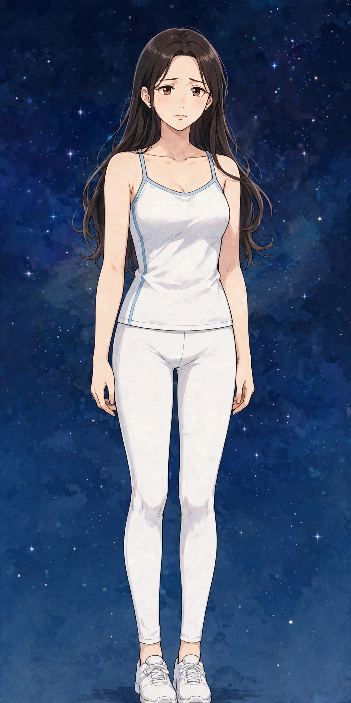

新宿で季節の変わり目の不調ケア疲れ・だるさ

季節の変わり目になると、決まって体が重くなったり、眠りの質が落ちたりする。そんなリズムの乱れについて、仕組みとケアをまとめます。
東洋医学から見た考え方
気温や日照の変化に体が適応するには、自律神経の働きが欠かせません。変化が大きい時期は、その調整に負担がかかります。東洋医学では、季節ごとに体に影響する要素（寒・湿・燥など）が変わると考え、季節に合わせた養生を大切にします。
関係する部位の目安は、図1のとおりです。
図1｜季節の変わり目に重くなりやすい全身（正面）

当店でのケア
おすすめ：オイルマッサージ＋美容整体
当店では、季節の変わり目に弱りがちな巡りを、全身のケアで整えます。その日の体調に合わせてペースを調整し、無理のない圧で進めます。変わり目を乗り切る体づくりのお手伝いをします。
当店の施術は、気になる部分だけをなでるのではなく、つながりのある部位まで含めて深い圧でほぐし、巡りを促しながら整えていくのが持ち味です。施術のあとに「体が軽い」「すっきりした」と感じていただける状態を目指して、90分を組み立てます。
ご自宅でのセルフケア
変わり目は、予定を詰めすぎず、休息を多めに取るのが養生の基本です。服装でこまめに体温調整をし、旬の食材を食事に取り入れましょう。眠りのリズムを一定に保つことも助けになります。
セルフケアで意識したい場所と動きは、図2のとおりです。
図2｜変わり目の時期のセルフケア（正面）
キーワード：季節の変わり目不調感寒暖差体の重さ
季節の変わり目の不調のケアは90分 10,000円（税込）。近日開院予定のため、受付を始めましたらLINEでお知らせします。